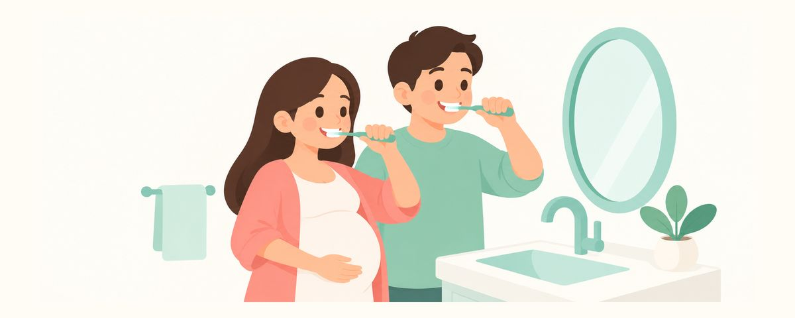

아기 충치 예방, 엄마 입안에서 시작해요: 충치균 전파와 가족 구강 관리
엄마와 가족의 입속 건강은 아기 충치 위험에 영향을 줘요. 충치균이 옮는 원리, 출산 전에 할 일, 숟가락 공유에 대한 오해를 정리했어요.
한눈에 보기
- 엄마뿐 아니라 온 가족의 입속이 중요해요
- 남은 충치 치료는 출산 전에 마쳐요
- 첫 이가 나면 불소치약으로 닦는 게 더 중요해요
"엄마 충치균이 아기에게 옮는다"는 말을 들으면 뽀뽀도 숟가락도 조심스러워지지요. 정말 그런지, 무엇을 얼마나 조심해야 하는지 헷갈리기 쉬워요. 충치균이 아기에게 가는 길과, 그보다 더 중요한 예방법을 차근차근 정리했어요.
아기 입속 세균은 어디서 올까요
아기는 충치균 없이 태어나요. 그런데 생후 몇 달 안에 가까이 지내는 사람들의 침을 통해 입안에 세균이 자리 잡기 시작해요. 이가 나기 전부터 혀와 잇몸에 세균이 자리를 잡아요.
이 세균은 엄마에게서만 오지 않아요. 아빠, 형제, 조부모처럼 아기와 가까이 지내는 온 가족이 영향을 줘요. 그래서 엄마 혼자가 아니라 가족 모두의 입속 건강이 함께 중요해요.
예전에는 아기가 특정 시기에만 충치균에 옮는다고 보고, 그 시기만 잘 막으면 된다고 여기기도 했어요. 지금은 세균이 이가 나기 전부터 꾸준히 자리 잡는다고 봐요.
그렇다고 균이 옮는 것만으로 충치가 생기지는 않아요. 충치는 여러 가지가 함께 만들어요.
- 단 음식을 얼마나 자주 먹는지: 세균은 당을 먹고 이를 녹이는 산을 만들어요.
- 불소를 쓰는지: 불소는 이 겉면을 단단하게 해서 산에 잘 견디게 해요.
- 잘 닦는지: 이에 붙은 세균 막을 매일 걷어 내야 해요.
그래서 최근 지침은 균이 옮는 걸 막는 일보다 보호자의 입속 건강, 당 줄이기, 불소에 더 무게를 둬요. 보호자의 입속 건강은 아이에게 좋게든 나쁘게든 영향을 준답니다.
출산 전에 온 가족 입속을 정리해요
출산 전 몇 달은 엄마와 가족의 입안을 정리하기 좋은 때예요. 이렇게 챙겨 보세요.
- 치료하지 않은 충치가 있다면 출산 전에 치료를 마쳐요. 입안에 충치가 많을수록 충치균도 많아요.
- 아빠와 다른 가족도 함께 검진을 받으면 좋아요.
- 온 가족이 하루 2회 불소치약 칫솔질, 하루 1회 치실을 지켜요.
- 단 음료와 간식을 자주 먹는 습관을 줄여요. 아이는 가족의 식습관을 그대로 배워요.
- 아기가 태어나면 되도록 숟가락과 칫솔은 따로 써요.
- 음식을 씹어서 아기에게 주지 않아요.
여기서 너무 엄격해질 필요는 없어요. 숟가락 공유나 뽀뽀를 피하면 충치가 줄어든다는 걸 직접 입증한 연구는 아직 없어요. 실천할 수 있는 만큼 하되, 다 지키지 못했다고 자책하지 않아도 돼요.
가족이 함께 바꾸면 훨씬 쉬워요. 집에 단 음료를 쌓아 두지 않고, 물을 마시는 습관을 온 가족이 들이면 아이도 자연스럽게 따라 해요.
아기가 태어난 뒤에는 무엇보다 첫 이가 나면 불소치약으로 닦아 주는 것이 더 중요해요. 두 돌 전에는 단맛이 더해진 음식과 음료를 피하는 것도 큰 도움이 돼요.
자주 묻는 질문
아기에게 뽀뽀하면 안 되나요?
뽀뽀를 피하면 충치가 줄어든다는 걸 직접 입증한 연구는 아직 없어요. 애정 표현을 걱정하기보다 엄마 아빠의 충치를 치료하고, 첫 이부터 불소치약으로 닦아 주는 데 힘을 쏟는 게 더 효과적이에요.
이미 숟가락을 같이 써 왔어요. 괜찮을까요?
너무 걱정하지 않아도 돼요. 충치는 균만으로 생기지 않고, 단 음식 횟수와 불소, 이 닦기가 함께 결정해요. 지금부터 할 수 있는 만큼 따로 쓰고, 이 닦기와 단 음식 줄이기에 신경 써 주세요.
아빠도 치과 치료를 받아야 하나요?
네, 아기와 가까이 지내는 가족 모두의 입속 건강이 영향을 줘요. 치료하지 않은 충치가 있다면 아빠도 출산 전에 치료받으면 좋아요.
출산까지 시간이 별로 없어요. 언제 치과에 가야 할까요?
남은 치료가 있다면 이번 달 안에 예약하세요. 임신 후기에는 의자에 오래 누워 받는 치료가 힘들 수 있어서, 조금이라도 빨리 시작하는 게 좋아요.
이럴 땐 치과에 가 보세요
- 엄마나 가족에게 치료하지 않은 충치가 있을 때
- 이가 시리거나 음식이 자주 끼는 곳이 있을 때
- 잇몸에서 피가 나거나 붓는 일이 이어질 때
- 임신 후 아직 검진을 받지 않았을 때
- 출산 전 남은 치료 일정을 아직 잡지 못했을 때
시기마다 알림으로 받아 보세요
치아달력 앱에 생일(또는 출산 예정일)을 넣으면 이 글들이 필요한 때에 맞춰 알림으로 와요. 가입 없이 무료로 쓸 수 있어요.
출처
이 앱의 정보는 일반적인 교육 목적이며 진료를 대체하지 않습니다. 아이의 상태에 대해서는 치과의사와 상담하세요.